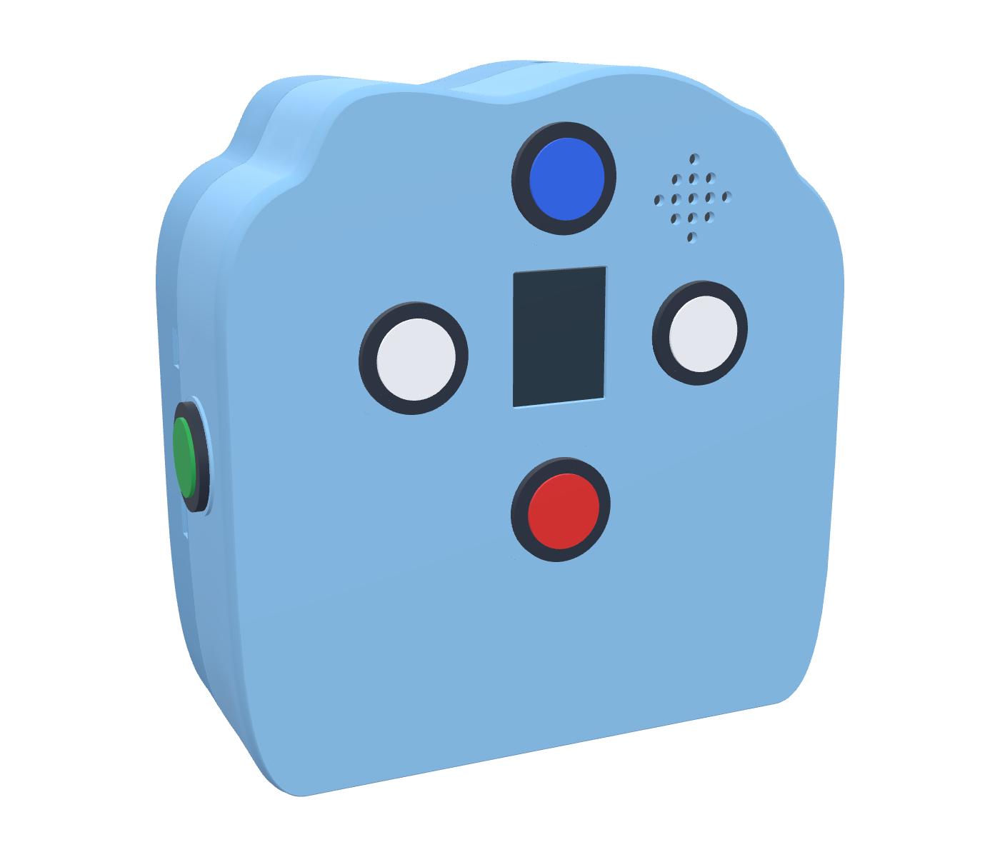
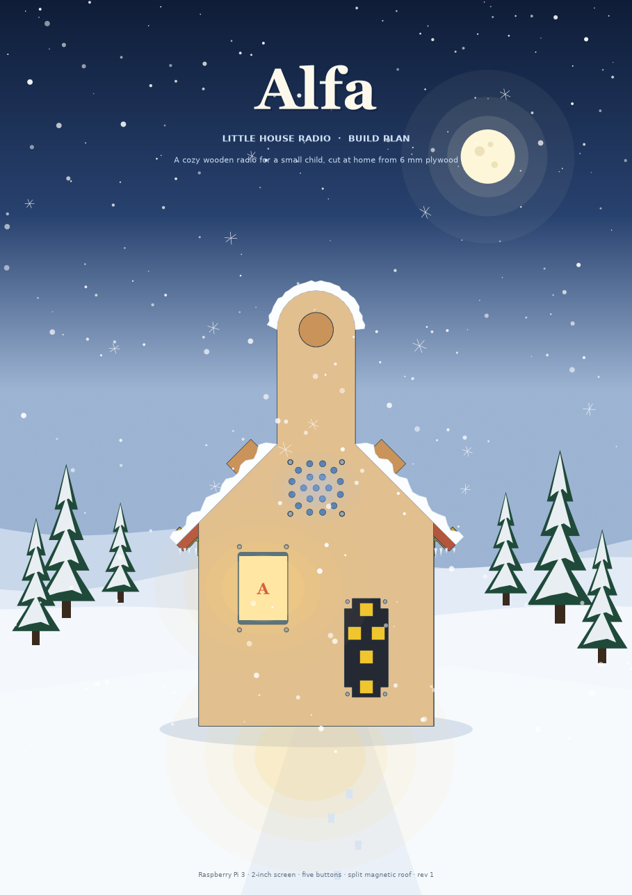

Obudowa
Dwa światy rzemiosła: pastelowa chmurka z druku 3D z 5 przyciskami arcade lub ciepła obudowa ze sklejki brzozowej. Pliki STL, 3MF, BREP i plany 1:1.
MAŁE RADIO. DUŻE POMYSŁY.
Małe radio i cały świat do odkrycia.
Obróć je, zajrzyj do środka i zobacz, jak składa się każda część.

Dwa światy rzemiosła: pastelowa chmurka z druku 3D z 5 przyciskami arcade lub ciepła obudowa ze sklejki brzozowej. Pliki STL, 3MF, BREP i plany 1:1.

Bezpośrednie połączenia 6 przycisków arcade do pinów GPIO Raspberry Pi 3, ekran SPI oraz wzmacniacz I²S. Schematy ideowe i interaktywny atlas okablowania.
class PlayerSession:
"""Offline audio & letters"""
def __init__(self, img, snd, audio):
self.gallery = Gallery(img)
self.audio = audio
self.guard = MashGuard()
def accept_press(self, key, now):
if not self.guard.accept(now):
return False
return self.handle(key)Oprogramowanie dla konfiguracji z 5 przyciskami arcade jest w przygotowaniu. Działający symulator i architekturę z wersji v1 można obejrzeć w archiwum v1.

Materiały edukacyjne, fikcyjny rekord ADR według norm wyrobów medycznych (MDR) oraz kompletne pakiety projektu do pobrania.
NOWE RENDERY CAD · FOTOREALISTYCZNE SPOJRZENIE
Najnowsze rendery złożenia v2: zwarta głębokość 72 mm, płaska kołyska baterii w tylnej pokrywie, 5 przycisków arcade oraz akustyczne otwory głośnika w kształcie chmur.

GOTOWE NA TWÓJ STÓŁ
Pliki STL są w milimetrach i zawierają orientację druku. Złożenie BREP zachowuje bryły CAD.
SZACOWANY KOSZT BUDOWY · POLSCY DOSTAWCY
Ceny elementów pochodzą wprost z polskich sklepów elektronicznych i dla makerów (Botland, Kamami, Gotronik, sklep.msalamon.pl, Allegro). Rzeczywiste ceny i dostępność mogą się różnić.
Kompletne radio od zera (~90–110 €).
Tylko ~155 PLN, jeśli masz już Pi 3 i filament PETG!
Tył zawiera kołyskę baterii i półkę pod poziome Raspberry Pi. Masa filamentu i podpory zależą od profilu slicera.
Rysunki producenta określają Pi i LCD. Wymiary od dostawców i pozostałe kształty złączy są wstępne. Naddatek pasowania nie dowodzi wytrzymałości wydruku.
| Element | Wymiar nominalny, mm | Źródło / pewność |
|---|
Nadal potrzebne są sprawdzenia fizyczne: cykle zatrzasków, trzymanie śrub, trzymanie baterii, upadki i temperatury pracy. Procedura jest w instrukcji złożenia.
Najedź albo stuknij widoczną powierzchnię, aby zobaczyć jej identyfikator i nazwę. Wybierz widok rozstrzelony i obróć model, żeby obejrzeć mocowania wewnętrzne. Włącz identyfikatory ramy, aby pokazać ich położenie.
| ID | Cecha | Część drukowana |
|---|
RYSUNKI I RENDERY SKRZYNKI · WARSZTAT
Klasyczna obudowa z 6 mm sklejki brzozowej. Wszystkie elementy, plany cięcia w skali 1:1 na 4 arkusze A4 oraz modele 3D do wycinania laserem lub frezowania CNC.

PAKIET WARSZTATOWY I DOKUMENTACJA
Kompletne archiwum projektu cloud-radio rozszerzone o ilustrowaną instrukcję montażu obudowy ze sklejki, konfigurację Raspberry Pi 3, atlas połączeń oraz plany 1:1 do druku.
Dedykowany shield PCB dla Wersji 2 (Raspberry Pi 3 z 6 przyciskami arcade, złączami JST oraz zintegrowanym DAC I²S) jest obecnie w przygotowaniu i powstanie w późniejszym etapie. W obecnej wersji 2 elektronika łączy się bezpośrednio z pinami GPIO Raspberry Pi 3 bez potrzeby stosowania przetwornika ADC ani dodatkowej płytki drukowanej.
Kompletny projekt płytki shield Prototype A z wersji v1 (ze wsparciem dla klawiatury 5-klawiszowej oraz ADC ADS1115) można obejrzeć i pobrać w archiwum wersji v1:
SCHEMAT IDEOWY POŁĄCZEŃ
Wszystkie moduły, szyny sygnałowe, dzielnik napięcia i zasilanie podłączone do 40-pinowego złącza GPIO Raspberry Pi 3. Skalowalny schemat wektorowy.

PEŁNY ATLAS OKABLOWANIA
| Przewód | Obwód / sygnał | Od | Do |
|---|
SHIELD / PROTOTYP A
ADC ADS1115, wzmacniacz MAX98357A, dwa rezystory dzielnika i elementy zasilania są bezpośrednio na płytce. Pozostają trzy przewody do LCD, klawiatury i głośnika.
Do wyceny i przeglądu wykonawcy. Przed zamówieniem: sprawdź wysokość gniazda i dystansów, przewody JST oraz dopasowanie do obudowy. Próby elektryczne i termiczne nadal są potrzebne.
| Oznaczenie | Element | Montaż |
|---|
Aplikacja w Pythonie dla Raspberry Pi 3 jest przebudowywana pod kątem natywnej obsługi 6 cyfrowych przycisków arcade (Góra, Dół, Lewo, Prawo, Boczny lewy, Boczny prawy) podłączonych bezpośrednio do GPIO. Nowa wersja oprogramowania oraz dedykowany shield powstaną wkrótce.
W pełni funkcjonalny interaktywny symulator nauki 32 liter, silnik audio oraz pełna architektura oprogramowania z wersji v1 są dostępne w archiwum wersji v1:
Pobierz pełne archiwa projektu do druku, wycinania i uruchomienia na sprzęcie.
Wczytywanie danych projektu…